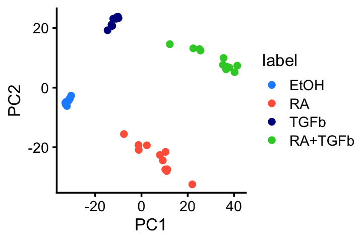
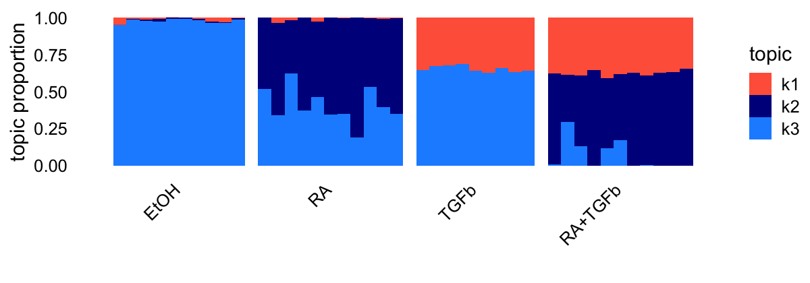
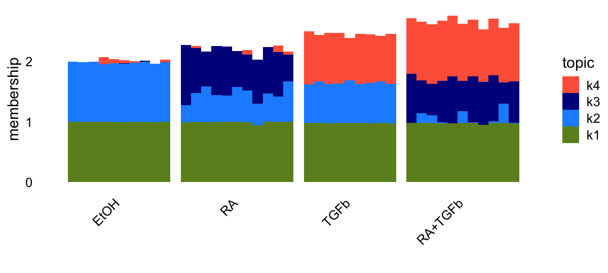
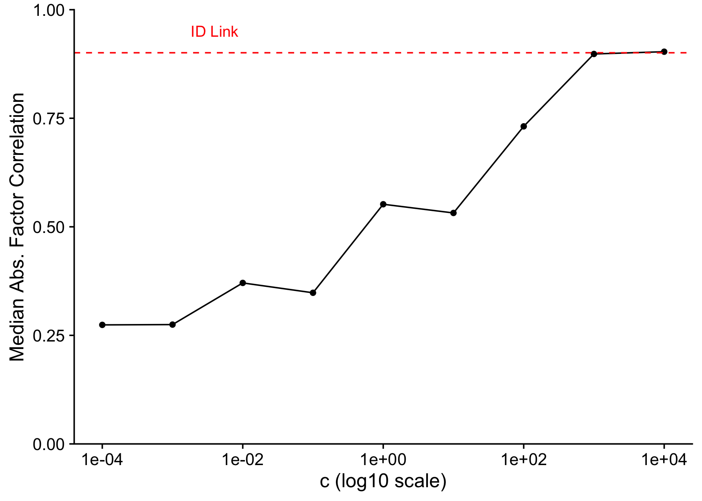

The MCF-7 data set as possible model system for the Poisson log1p NMF model
Peter Carbonetto
Last updated: 2025-05-25
Checks: 5 2
Knit directory: log1p_experiments/
This reproducible R Markdown analysis was created with workflowr (version 1.7.1). The Checks tab describes the reproducibility checks that were applied when the results were created. The Past versions tab lists the development history.
The R Markdown file has unstaged changes. To know which version of
the R Markdown file created these results, you’ll want to first commit
it to the Git repo. If you’re still working on the analysis, you can
ignore this warning. When you’re finished, you can run
wflow_publish to commit the R Markdown file and build the
HTML.
Great job! The global environment was empty. Objects defined in the global environment can affect the analysis in your R Markdown file in unknown ways. For reproduciblity it’s best to always run the code in an empty environment.
The command set.seed(20240402) was run prior to running
the code in the R Markdown file. Setting a seed ensures that any results
that rely on randomness, e.g. subsampling or permutations, are
reproducible.
Great job! Recording the operating system, R version, and package versions is critical for reproducibility.
- flashier-nmf
To ensure reproducibility of the results, delete the cache directory
mcf7_cache and re-run the analysis. To have workflowr
automatically delete the cache directory prior to building the file, set
delete_cache = TRUE when running wflow_build()
or wflow_publish().
Great job! Using relative paths to the files within your workflowr project makes it easier to run your code on other machines.
Great! You are using Git for version control. Tracking code development and connecting the code version to the results is critical for reproducibility.
The results in this page were generated with repository version 3f1b9b5. See the Past versions tab to see a history of the changes made to the R Markdown and HTML files.
Note that you need to be careful to ensure that all relevant files for
the analysis have been committed to Git prior to generating the results
(you can use wflow_publish or
wflow_git_commit). workflowr only checks the R Markdown
file, but you know if there are other scripts or data files that it
depends on. Below is the status of the Git repository when the results
were generated:
Ignored files:
Ignored: .DS_Store
Ignored: .Rhistory
Ignored: data/.DS_Store
Unstaged changes:
Modified: analysis/mcf7.Rmd
Modified: data/GSE152749_family.soft.gz
Note that any generated files, e.g. HTML, png, CSS, etc., are not included in this status report because it is ok for generated content to have uncommitted changes.
These are the previous versions of the repository in which changes were
made to the R Markdown (analysis/mcf7.Rmd) and HTML
(docs/mcf7.html) files. If you’ve configured a remote Git
repository (see ?wflow_git_remote), click on the hyperlinks
in the table below to view the files as they were in that past version.
| File | Version | Author | Date | Message |
|---|---|---|---|---|
| Rmd | 3f1b9b5 | Eric Weine | 2025-05-23 | added log1p fits |
| html | 3f1b9b5 | Eric Weine | 2025-05-23 | added log1p fits |
| Rmd | bde6ab2 | Peter Carbonetto | 2025-05-20 | Added PCA to mcf7 analysis. |
| Rmd | 95270b1 | Peter Carbonetto | 2025-05-11 | Working on some additional analyses to add to mcf7.Rmd. |
| html | 9913824 | Peter Carbonetto | 2025-05-09 | Ran wflow_publish("analysis/mcf7.Rmd"). |
| Rmd | 603a5aa | Peter Carbonetto | 2025-05-09 | Added a few notes to the mcf7 analysis. |
| Rmd | d22faed | Peter Carbonetto | 2025-05-09 | Added flashier NMF fit to mcf7 analysis. |
| html | b777168 | Peter Carbonetto | 2025-05-09 | Added topic model fitting and strucure plot to the mcf7 analysis. |
| Rmd | 3b682ef | Peter Carbonetto | 2025-05-09 | wflow_publish("analysis/mcf7.Rmd", verbose = TRUE, view = FALSE) |
| html | 57d755c | Peter Carbonetto | 2025-05-09 | Updated the template for the mcf7 analysis. |
| Rmd | ebd0936 | Peter Carbonetto | 2025-05-09 | workflowr::wflow_publish("mcf7.Rmd") |
| html | 728ac33 | Peter Carbonetto | 2025-05-09 | First build of the mcf7 analysis. |
| Rmd | 7b53efa | Peter Carbonetto | 2025-05-09 | workflowr::wflow_publish("mcf7.Rmd") |
Here I explore the possibility of the data from the Sanford et al eLife paper as a possible “model system” for the Poisson log1p NMF model. This paper analyzed the transcriptional response of human MCF-7 cells to retinoic acid and TGF-\(\beta\), applied individually and in combination.
The following abbreviations were used in their data: EtOH = ethanol; RA = retinoic acid; TGFb = TGF-\(\beta\).
Note that the data were downloaded from GEO, accession GSE152749.
Load the fastTopics and flashier packages, and a few other packages needed to retrieve the data and create the plots.
library(rsvd)
library(fastTopics)
library(flashier)
library(data.table)
# Warning: package 'data.table' was built under R version 4.4.1
library(GEOquery)
library(ggplot2)
# Warning: package 'ggplot2' was built under R version 4.4.1
library(cowplot)
library(passPCA)Set the seed for reproducibility:
set.seed(1)Prepare the data for analysis with fastTopics and flashier
Load the gene information:
genes <- fread("data/Human.GRCh38.p13.annot.tsv.gz",
sep = "\t",header = TRUE,stringsAsFactors = FALSE)
class(genes) <- "data.frame"Load the RNA-seq counts:
counts <- fread("data/GSE152749_raw_counts_GRCh38.p13_NCBI.tsv.gz",
sep = "\t",header = TRUE,stringsAsFactors = FALSE)
class(counts) <- "data.frame"
rownames(counts) <- counts$GeneID
counts <- counts[,-1]
counts <- as.matrix(counts)
storage.mode(counts) <- "double"
counts <- t(counts)
ids <- rownames(counts)Load the sample information:
geo <- getGEO(filename = "data/GSE152749_family.soft.gz")
samples <- data.frame(id = names(GSMList(geo)),
treatment = sapply(GSMList(geo),
function (x) Meta(x)$title))
samples <- samples[ids,]
rownames(samples) <- NULL
samples <- transform(samples,
EtOH = grepl("EtOH",treatment,fixed = TRUE),
RA = grepl("RA",treatment,fixed = TRUE),
TGFb = grepl("TGFb",treatment,fixed = TRUE))
samples$label <- "EtOH"
samples[samples$RA,"label"] <- "RA"
samples[samples$TGFb,"label"] <- "TGFb"
samples[with(samples,RA & TGFb),"label"] <- "RA+TGFb"
samples <- transform(samples,
label = factor(label,c("EtOH","RA","TGFb","RA+TGFb")))Remove the genes that are expressed in fewer than 4 samples:
x <- colSums(counts > 0)
i <- which(x > 3)
genes <- genes[i,]
counts <- counts[,i]PCA
Let’s see what happens when we apply PCA to the shifted log counts.
First compute the shifted log counts:
a <- 1
s <- rowSums(counts)
s <- s/mean(s)
Y <- log1p(counts/(a*s))Now run PCA on the shifted log counts, and plot the first 2 PCs:
pca <- rpca(Y,k = 4,center = TRUE,scale = FALSE)
colnames(pca$x) <- paste0("PC",1:4)
pdat <- data.frame(samples,pca$x)
ggplot(pdat,aes(x = PC1,y = PC2,color = label)) +
geom_point() +
scale_color_manual(values = c("dodgerblue","tomato","darkblue",
"limegreen")) +
theme_cowplot(font_size = 10)
| Version | Author | Date |
|---|---|---|
| 3f1b9b5 | Eric Weine | 2025-05-23 |
Topic model
Let’s now try fitting a (multinomial) topic model to these data, which represents an additive model of the transcriptional changes in response to the different exposures. After a bit of trial and error, it turns out that 4 topics are needed to get the right result:
fit0 <- fit_poisson_nmf(counts,k = 4,init.method = "random",numiter = 50,
verbose = "none",
control = list(nc = 4,extrapolate = FALSE))
fit <- fit_poisson_nmf(counts,fit0 = fit0,numiter = 50,verbose = "none",
control = list(nc = 4,extrapolate = TRUE))The topic model identifies one topic for the transcriptional responses to RA, one topic for the responses TGF-\(\beta\), and one topic for the “control” or “baseline” (ethanol), and the response from exposure to RA + TGF-\(\beta\) is a fairly even mixture of the RA and TGF-\(\beta\) topics.
topic_colors <- c("tomato","darkblue","gold","skyblue")
p1 <- structure_plot(fit,grouping = samples$label,topics = 1:4,
colors = topic_colors)
p1$plot
NMF of the shifted log counts
Now let’s try fitting an NMF to the shifted log counts using flashier. Implicitly, this model is a multiplicative model of the transcriptional changes in response to the different exposures.
Next fit an NMF to the shifted log counts using flashier:
n <- nrow(counts)
x <- rpois(1e7,1/n)
s1 <- sd(log(x + 1))
fl_nmf <- flash(Y,ebnm_fn = ebnm_point_exponential,var_type = 2,
greedy_Kmax = 4,S = s1,backfit = TRUE,verbose = 0)
Warning: The above code chunk cached its results, but
it won’t be re-run if previous chunks it depends on are updated. If you
need to use caching, it is highly recommended to also set
knitr::opts_chunk$set(autodep = TRUE) at the top of the
file (in a chunk that is not cached). Alternatively, you can customize
the option dependson for each individual chunk that is
cached. Using either autodep or dependson will
remove this warning. See the
knitr cache options for more details.
Note that I chose “greedy_Kmax” after some trial and error and found that 4 was a good setting.
topic_colors <- c("olivedrab","dodgerblue","tomato","darkblue")
res <- ldf(fl_nmf,type = "i")
p2 <- structure_plot(res$L,grouping = samples$label,topics = c(2,3,4,1),
colors = topic_colors)
p2$plot
Interestingly, the NMF model applied to the shifted log count decomposes the samples in nearly the same way as the topic model, with one key difference: it also explicitly has a baseline factor (factor 1).
Log1p Fits
Below I fit the log1p model for different values of c.
cc_vec <- c(1e-3, 1)
fit_list <- list()
for (cc in cc_vec) {
set.seed(1)
fit_list[[as.character(cc)]] <- fit_poisson_log1p_nmf(
Y = counts,
K = 4,
cc = cc,
loglik = "exact",
control = list(verbose = FALSE)
)
}Here is the c = 1 structure plot, which looks very similar to flashier (though is less sparse).
topic_colors <- c("olivedrab","dodgerblue","tomato","darkblue")
normalized_structure_plot(
fit = fit_list$`1`,
grouping = samples$label,
colors = topic_colors,
topics = c(2,3,4,1)
)$plot
| Version | Author | Date |
|---|---|---|
| 3f1b9b5 | Eric Weine | 2025-05-23 |
The c = 1e-3 structure plot is below, which looks a bit crazy.
topic_colors <- c("olivedrab","dodgerblue","tomato","darkblue")
normalized_structure_plot(
fit = fit_list$`0.001`,
grouping = samples$label,
colors = topic_colors,
topics = c(2,3,4,1)
)$plot
| Version | Author | Date |
|---|---|---|
| 3f1b9b5 | Eric Weine | 2025-05-23 |
tm_rank1 <- fastTopics:::fit_pnmf_rank1(counts)
init_LL <- cbind(
tm_rank1$L,
matrix(
data = 1e-10,
nrow = nrow(counts),
ncol = 3
)
)
rownames(init_LL) <- rownames(counts)
init_FF <- cbind(
tm_rank1$F,
matrix(
data = 1e-10,
nrow = ncol(counts),
ncol = 3
)
)
rownames(init_FF) <- colnames(counts)
fit0 <- init_poisson_nmf(X = counts, L = init_LL, F = init_FF)
fit <- fit_poisson_nmf(X = counts, fit0 = fit0)
# Fitting rank-4 Poisson NMF to 41 x 26743 dense matrix.
# Running at most 100 SCD updates, without extrapolation (fastTopics 0.7-24).Finally, I also fit fasttopics with a rank-1 initialization just to make sure the differences weren’t being driven by initialization.
topic_colors <- c("tomato","darkblue","gold","skyblue")
p1 <- structure_plot(fit,grouping = samples$label,topics = 1:4,
colors = topic_colors)
p1$plot
| Version | Author | Date |
|---|---|---|
| 3f1b9b5 | Eric Weine | 2025-05-23 |
Topic Model with Alternative Initialization
I also attempted to initialize the topic model where each sample is loaded on the mean of only the greatest L2 norm point in PC space corresponding to it’s treatment group.
pdat$l2_pc <- sqrt(
pdat$PC1 ^ 2 + pdat$PC2 ^ 2
)
# representative samples:
# RA+TGFb: GSM4625622
# RA: GSM4625634
# EtOH: GSM4625648
# TGFb: GSM4625621
FF <- cbind(
counts["GSM4625622", ],
counts["GSM4625634", ],
counts["GSM4625648", ],
counts["GSM4625621", ]
)
rownames(FF) <- colnames(counts)
LL <- cbind(
ifelse(pdat$label == "RA+TGFb", 1, 0),
ifelse(pdat$label == "RA", 1, 0),
ifelse(pdat$label == "EtOH", 1, 0),
ifelse(pdat$label == "TGFb", 1, 0)
)
rownames(LL) <- rownames(counts)
fit0 <- init_poisson_nmf(X = counts, F = FF, L = LL)
fit <- fit_poisson_nmf(X = counts, fit0 = fit0)
# Fitting rank-4 Poisson NMF to 41 x 26743 dense matrix.
# Running at most 100 SCD updates, without extrapolation (fastTopics 0.7-24).Here is the structure plot at initialization:
topic_colors <- c("tomato","darkblue","gold","skyblue")
structure_plot(fit0, grouping = pdat$label, topics = 1:4,
colors = topic_colors)$plot
And here it is after optimization:
topic_colors <- c("tomato","darkblue","gold","skyblue")
structure_plot(fit, grouping = pdat$label, topics = 1:4,
colors = topic_colors)$plot
newX <- t(fit$F)
# 1) center using the training means
# (pca$center is a length‐p vector of column means of Y)
newX_cent <- sweep(newX, 2, pca$center, FUN = "-")
# 2) since you had scale = FALSE, you do NOT rescale here
# 3) project onto the PC loadings
# (pca$v is a p×k matrix of the top k loading vectors)
scores <- newX_cent %*% pca$rotation
sessionInfo()
# R version 4.4.0 (2024-04-24)
# Platform: aarch64-apple-darwin20
# Running under: macOS Ventura 13.5
#
# Matrix products: default
# BLAS: /Library/Frameworks/R.framework/Versions/4.4-arm64/Resources/lib/libRblas.0.dylib
# LAPACK: /Library/Frameworks/R.framework/Versions/4.4-arm64/Resources/lib/libRlapack.dylib; LAPACK version 3.12.0
#
# locale:
# [1] en_US.UTF-8/en_US.UTF-8/en_US.UTF-8/C/en_US.UTF-8/en_US.UTF-8
#
# time zone: America/New_York
# tzcode source: internal
#
# attached base packages:
# [1] stats graphics grDevices utils datasets methods base
#
# other attached packages:
# [1] passPCA_0.1-4 cowplot_1.1.3 ggplot2_3.5.2
# [4] GEOquery_2.72.0 Biobase_2.64.0 BiocGenerics_0.50.0
# [7] data.table_1.17.0 flashier_1.0.56 ebnm_1.1-34
# [10] fastTopics_0.7-24 rsvd_1.0.5
#
# loaded via a namespace (and not attached):
# [1] distr_2.9.3 pbapply_1.7-2 rlang_1.1.6
# [4] magrittr_2.0.3 git2r_0.33.0 horseshoe_0.2.0
# [7] compiler_4.4.0 vctrs_0.6.5 reshape2_1.4.4
# [10] quadprog_1.5-8 stringr_1.5.1 pkgconfig_2.0.3
# [13] crayon_1.5.3 fastmap_1.2.0 labeling_0.4.3
# [16] promises_1.3.2 rmarkdown_2.29 tzdb_0.4.0
# [19] purrr_1.0.4 xfun_0.52 cachem_1.1.0
# [22] trust_0.1-8 jsonlite_2.0.0 progress_1.2.3
# [25] later_1.4.2 irlba_2.3.5.1 parallel_4.4.0
# [28] prettyunits_1.2.0 R6_2.6.1 bslib_0.9.0
# [31] stringi_1.8.7 RColorBrewer_1.1-3 SQUAREM_2021.1
# [34] limma_3.60.3 jquerylib_0.1.4 MatrixExtra_0.1.15
# [37] Rcpp_1.0.14 knitr_1.50 R.utils_2.12.3
# [40] readr_2.1.5 httpuv_1.6.15 Matrix_1.7-0
# [43] splines_4.4.0 tidyselect_1.2.1 rstudioapi_0.16.0
# [46] yaml_2.3.10 lattice_0.22-6 tibble_3.2.1
# [49] plyr_1.8.9 withr_3.0.2 evaluate_1.0.3
# [52] Rtsne_0.17 RcppParallel_5.1.10 startupmsg_0.9.6.1
# [55] xml2_1.3.6 pillar_1.10.2 whisker_0.4.1
# [58] plotly_4.10.4 softImpute_1.4-1 generics_0.1.3
# [61] rprojroot_2.0.4 invgamma_1.1 float_0.3-2
# [64] truncnorm_1.0-9 hms_1.1.3 munsell_0.5.1
# [67] scales_1.3.0 ashr_2.2-66 gtools_3.9.5
# [70] RhpcBLASctl_0.23-42 glue_1.8.0 scatterplot3d_0.3-44
# [73] lazyeval_0.2.2 tools_4.4.0 fs_1.6.6
# [76] grid_4.4.0 tidyr_1.3.1 colorspace_2.1-1
# [79] sfsmisc_1.1-18 deconvolveR_1.2-1 cli_3.6.5
# [82] Polychrome_1.5.4 workflowr_1.7.1 mixsqp_0.3-54
# [85] viridisLite_0.4.2 dplyr_1.1.4 uwot_0.2.3
# [88] gtable_0.3.6 R.methodsS3_1.8.2 sass_0.4.10
# [91] digest_0.6.37 ggrepel_0.9.6 farver_2.1.2
# [94] htmlwidgets_1.6.4 R.oo_1.27.0 htmltools_0.5.8.1
# [97] lifecycle_1.0.4 httr_1.4.7 statmod_1.5.0
# [100] MASS_7.3-61